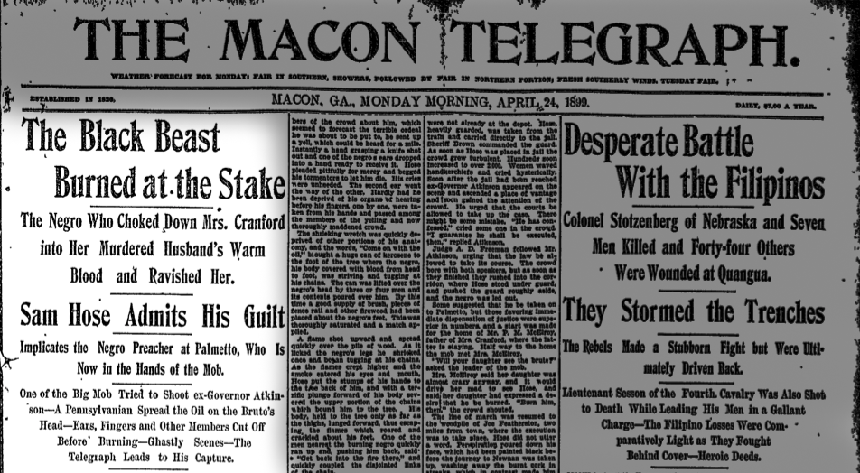
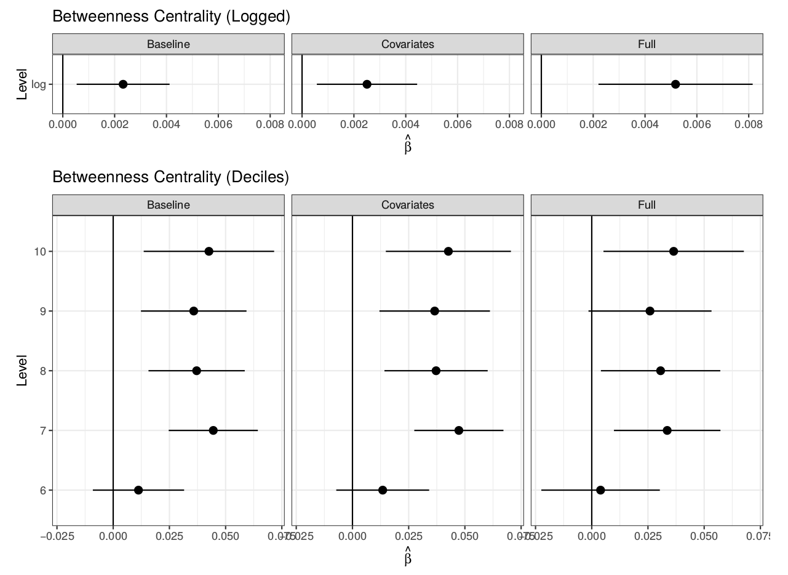

name: inverse layout: true class: center, middle, inverse --- #Publicity and the Delegitimation of Lynching Michael Weaver The University of British Columbia April 12, 2018 --- -- ##Societies accept or tolerate some forms of violence while rejecting others. --- ###Domestic violence -- ###Dueling -- ###Police use of force -- ##How does violence become publicly unacceptable? --- ##Lynching in the United States --- template:inverse ###Rebecca Felton, suffragette: <img src="./clippings/felton.png" width="90%" </img> --- layout:false class: left, middle > "**I led the mob** which lynched Nelse Patton and **I'm proud of it**. ... I directed every movement of the mob. **I wanted him lynched**. I saw his body dangling from a tree this morning, and I am glad of it. **I aroused the mob and directed them to storm the jail**. I had my revolver but did not use it. I gave it to a deputy sheriff and **told him to shoot** Patton and shoot to kill." >> William V. Sullivan, former United States Senator, Mississippi --- template:inverse  --- template:inverse *New York Times*. 5/7/1886 --- layout:false class: left, middle ###According to Ida Wells: > ####Frederick Douglass had "begun to believe it true that there was increasing lasciviousness on the part of Negroes" --- template:inverse <img src="./clippings/lynching_innocent.png" width="90%" </img> --- template:inverse <img src="./clippings/sheriff_fails_to_act.png" width="90%" </img> *New York Age* 1/17/1931 --- template:inverse *The Chillicothe Constitution-Tribune* 1/15/1931 --- template:inverse ##How did this transformation take place? -- ##How does violence move from acceptable to unacceptable? --- .left-column[ ##Outline ] .right-column[ ### Publicity ### Lynching ### Historical big data ### Results ] --- template:inverse ##The argument --- .left-column[ ##Argument ### Violence ] .right-column[ ### Most Violence is "Moral" * Perpetrators believe they are in the right (Black 1983, Fiske and Rai 2014) * **Cultural context** determines reception (e.g. who is a criminal) ### Which violence gets to be "legitimate" in a context? ] --- .left-column[ ##Argument ### Violence ] .right-column[ ### Which violence is "legitimate"? * Can't simply aggregate local preferences, assume homogeneous culture * Preference falsification (Wedeen 1998, Scott 1990), *whose* preferences? (Pitkin 1972) ### Which violence is "*legitimated*"? * Public acts that explicitly/implicitly justify violence * Like diagnostic, prognostic framing * Does not presume belief * Can be contested ] --- .left-column[ ##Argument ### Violence ] .right-column[ ### Which violence is "legitimated"? #### Motive - Perpetrators (and people who value relationships with them) - Victims and potential victims (and people who value relationships with them) #### Opportunity Powerful people have - Means to frame - Determine "facts", diagnostic framing - Enforse violence as solution, prognostic framing - Influence over local media, cultural institutions - Means to deny framing to others (coercion to silence critics) ] --- .left-column[ ##Argument ### Violence ] .right-column[ ### When powerful actors are perpetrators: 1. Violence is publicly legitimated 2. Difficult to challenge because of reputational costs, risk of coercion 3. May be self-reinforcing dynamic - Determine both "facts" and norms ### How can this dynamic be challenged? ] --- template:inverse ##Publicity Shocks --- .left-column[ ##Argument ### Violence ### Publicity ] .right-column[ ### Reach * Geographic scope of audience * May not share local norms on violence .red.bold[*] * Critics not silenced ### Inclusivity * Inclusion of different voices in public debate * Victims and allies no longer silent .red.bold[*] * 'Facts' and justifications around violence contested * Usually builds on "reach" .footnote[.red.bold[*] See, e.g. Keck and Sikkink 1998] ] --- .left-column[ ##Argument ### Violence ### Publicity ] .right-column[ ### Under some conditions... 1. News of violence reaches new audience 2. New audience is interested 3. New audience is critical/persuaded by victims 4. News of criticism reaches locality 5. Locals value relationship/reputation with audience ### ... increasing publicity can 1. Challenge hegemony of pro-violence discourses locally 2. Increase reputational costs to endorse or tacitly approve violence 3. Increase costs of permitting violence to occur ] --- .left-column[ ##Argument ### Violence ### Publicity ] .right-column[ ### How do changes in publicity occur? #### In part, broad social, economic, political transformations #### In part, technological change Communication technologies can either - **produce** conditions for greater publicity - or **modulate access** to publicity ] --- template:inverse ##Lynching and Publicity --- .left-column[ ##Argument ###Definitions ###Publicity ###Lynching] .right-column[ ###1. Increase in publicity * Technology + Economic/Political Integration `\(\rightarrow\)` greater reach * Reach + activists `\(\rightarrow\)` inclusion of black voices ] --- template:inverse <img src="./clippings/ida_wells_speech_1.png" width="75%" </img> --- template:inverse <img src="./clippings/ida_wells_speech_2.png" width="60%" </img> "The negroes must have detectives who can go and find out the facts about each lynching and publish them side by side with the versions printed in the Southern newspapers" --- template:inverse <img src="./clippings/NAACP_investigation.png" width="60%" </img> NAACP Investigations --- template:inverse Trials --- .left-column[##Argument ###Definitions ###Publicity ###Lynching] .right-column[ ###1. Increase in publicity * Technology + Economic/Political Integration `\(\rightarrow\)` greater reach * Reach + activists `\(\rightarrow\)` inclusion of black voices ###2. Publicity breeds criticism and scandal ] --- template:inverse <img src="./clippings/ida_wells_1.png" width="75%" </img> Threatened by Wells's publicity campaign --- class: left, middle > "The Chattanooga News does not lift its voice in behalf of Sheriff Shipp, his deputies or any member of the mob that lynched Johnson. Its voice is merely raised in behalf of this community. It submits that even so high and mighty a person as the Attorney General of the United States has **not just cause to hold this community up in contempt of the world** and in effect **publish it abroad as lawless** and firmly set against the enforcement of law." >> "An Official in Contempt of Chattanooga," *The Chattanooga News* --- .left-column[##Argument ###Definitions ###Publicity ###Lynching] .right-column[ ###1. Increase in publicity * Technology + Economic/Political Integration `\(\rightarrow\)` greater reach * Reach + activists `\(\rightarrow\)` inclusion of black voices ###2. Publicity breeds criticism and scandal ###3. Bad publicity turns Southern elites against lynching ] --- template:inverse <img src="./clippings/lynching_bad_reputation.png" width="50%" </img> "our lynching reputation ... is holding the state back in its development." --- template:inverse Lynching scares off investment and immigrants. --- .left-column[##Argument ###Definitions ###Publicity ###Lynching] .right-column[ ###1. Increase in publicity * Technology + Economic/Political Integration `\(\rightarrow\)` greater reach * Reach + activists `\(\rightarrow\)` inclusion of black voices ###2. Publicity breeds criticism and scandal ###3. Bad publicity turns Southern elites against lynching ###4. With opposition of local elites, lynching declines ] --- template:inverse <img src="./clippings/governor_prosecutes_lynchers.png" width="50%" </img> Maryland Governor uses National Guard to hunt down the lynch mob --- template:inverse --- template:inverse ## Testing --- .left-column[ ## Tests ###Reach ] .right-column[ ###Late 19th century... saw massive expansion of - transportation networks (railroads) - communication networks (telegraph) - news services (e.g. Associated Press) ] --- template:inverse <iframe width=100% height=100% frameborder='0' src='https://mdweaver.github.io/station_map' allowfullscreen webkitallowfullscreen mozallowfullscreen oallowfullscreen msallowfullscreen></iframe> --- class: center, middle <img src="./figures/telegraphGrowth.png" height="75%" width = "75%" </img> --- .left-column[ ## Tests ###Reach ] .right-column[ ###Late 19th century... saw massive expansion of - transportation networks (railroads) - communication networks (telegraph) - news services (e.g. Associated Press) ... which made the country smaller - reduced travel times for people and information - created a public demand for national news ] --- <iframe width='100%' height='100%' frameborder='0' src='https://mdweaver.github.io/times_year' allowfullscreen webkitallowfullscreen mozallowfullscreen oallowfullscreen msallowfullscreen></iframe> --- .left-column[ ## Tests ### Reach ] .right-column[ ### Difficult to test Emergence of national public sphere... - was caused by complex interactions of technology, government policy, economic interests - grew monotonically over time ### Variation at national level not useful ] --- .left-column[ ## Tests ### Reach ] .right-column[ ###Technology as *interface* to publicity - Differential access to communication technology... - implies differential exposure to new publicity ] --- .left-column[ ## Tests ### Reach ] .right-column[ ### Five implications of the argument Access to communication technology determines publicity. **The probability that a lynching is reported:** (1) **increases** as distance **decreases** between the lynching and the paper. (2) **increases** as travel times **decrease** between the lynching and the paper. (3) **increases** when the lynching occurred in an area more **central in communication and transportation networks**. ] [check]:http://servepapers247.com/wp-content/uploads/2013/05/Checkmark-Red.png --- .left-column[ ## Tests ### Reach ] .right-column[ ### Five implications of the argument Exposure to publicity yields criticism, fewer lynchings. **Coverage** of lynching is **more critical**: (4) as the **distance** from the lynching to the newspaper **increases**. Lynching **declines faster**: (5) in places with **more exposure** to national public sphere ] [check]:http://servepapers247.com/wp-content/uploads/2013/05/Checkmark-Red.png --- template:inverse ##How do we test this? --- template:inverse ##The data --- .left-column[ ##Data ###Newspapers ] .right-column[ ###"Big data" meets history Cornerstone of the project * Digitized historical newspapers * More than 3,000 different papers * Nation-wide coverage * Big-city dailies, small town weeklies * 9 million+ unique issues between 1880 and 1940 * Searchable content * 1.2 million articles mention "lynching" * Words/phrases for lynching discourse ] --- template:inverse ##Newspapers in sample over time <iframe width="100%" height="95%" frameborder="0" src="https://mdweaver107.cartodb.com/viz/b49b091c-6656-11e5-bbf5-0e9d9d43ad5d/embed_map" allowfullscreen webkitallowfullscreen mozallowfullscreen oallowfullscreen msallowfullscreen></iframe> --- coverage rates by states --- coverage rates over time --- template:inverse <iframe width='100%' height='100%' frameborder='0' src='https://yale.cartodb.com/u/mdweaver/viz/ffd06ece-8545-11e4-a898-0e018d66dc29/embed_map' allowfullscreen webkitallowfullscreen mozallowfullscreen oallowfullscreen msallowfullscreen></iframe> --- .left-column[ ##Data ###Newspapers ###Railroads ] .right-column[ ###Railroad networks Yearly data from 1880 and 1900 * Period of rapid growth (more than doubles) * 3109 counties in continental US * Network centrality of counties * Travel time between counties * Proxy for telegraph network ] --- class:center, middle <iframe width='100%' height='100%' frameborder='0' src='https://mdweaver.github.io/times_year' allowfullscreen webkitallowfullscreen mozallowfullscreen oallowfullscreen msallowfullscreen></iframe> --- .left-column[ ##Data ###Newspapers ###Railroads ###Lynchings ] .right-column[ ###Lynching events * No complete national lynching database * 1880 to 1930s, ~ 4000 *reported* events * Sources: * Historians, Sociologists * NAACP * Chicago Tribune ] --- template:inverse ##Analysis --- .left-column[ ## Analysis ### Design ] .right-column[ ### Observations * Issues appearing within a week of a lynching * Issue - lynching pairs ### Design * Panel analysis, multi-way clustering * Year, publication, lynching county fixed effects * Publication-county, lynching-county covariates (population, agricultural and industrial output, local railroad network) ] --- .left-column[ ## Analysis ### Design ### Results ] .right-column[ ### Five implications of the argument Access to communication technology determines publicity. **The probability that a lynching is reported:** ![check][] (1) **increases** as distance **decreases** between the lynching and the paper. (2) **increases** as travel times **decrease** between the lynching and the paper. (3) **increases** when the lynching occurred in an area more **central in communication and transportation networks**. ] [check]:./check-mark-3-24.png --- class: center, middle Probability of lynching mention by distance <img src="./figures/rawDistance_Article.svg" width="75%" height="75%"</img> --- .left-column[ ## Analysis ### Design ### Results ] .right-column[ ### Five implications of the argument Access to communication technology determines publicity. **The probability that a lynching is reported:** ![check][] (1) **increases** as distance **decreases** between the lynching and the paper. ![check][] (2) **increases** as travel times **decrease** between the lynching and the paper. (Closesness increases) (3) **increases** when the lynching occurred in an area more **central in communication and transportation networks**. ] [check]:./check-mark-3-24.png --- class: center, middle Probability of lynching mention by travel times --- .left-column[ ## Analysis ### Design ### Results ] .right-column[ ### Five implications of the argument Access to communication technology determines publicity. **The probability that a lynching is reported:** ![check][] (1) **increases** as distance **decreases** between the lynching and the paper. ![check][] (2) **increases** as travel times **decrease** between the lynching and the paper. (Closesness increases) ![check][] (3) **increases** when the lynching occurred in an area more **central in communication and transportation networks**. ] [check]:./check-mark-3-24.png --- class: center, middle Probability of lynching mention betweenness centrality: Dyads  --- .left-column[ ## Analysis ### Design ### Results ] .right-column[ ### Five implications of the argument Exposure to publicity yields criticism, fewer lynchings. **Coverage** of lynching is **more critical**: ![check][] (4) as the **distance** from the lynching to the newspaper **increases**. Lynching **declines faster**: (5) in places with **more exposure** to national public sphere ] [check]:./check-mark-3-24.png --- class: center, middle Anti-Lynching - Pro-Lynching Discourse <img src="./figures/discourse_table.png" width="100%" height="75%"</img> --- .left-column[ ## Analysis ### Design ### Results ] .right-column[ ### Five implications of the argument Exposure to publicity yields criticism, fewer lynchings. **Coverage** of lynching is **more critical**: ![check][] (4) as the **distance** from the lynching to the newspaper **increases**. Lynching **declines faster**: ![check][] (5) in places with **more exposure** to national public sphere ] [check]:./check-mark-3-24.png --- class: center, middle Access to higher circulation daily papers inhibits lynching <img src="./figures/circ_access.png" width="100%" height="75%"</img> --- class: center, middle Circulation, not population. <img src="./figures/pop_access.png" width="100%" height="75%"</img> --- .left-column[ ## Analysis ### Design ### Results ### Limits ] .right-column[ ###Railroads Endogenous * but network attributes not locally determined * conditioned on local railroad construction ###Alternative interpretations * Importance, not information * Condition on population, economic output * Access to circulation, not to population ###Text * Broad but limited depth * Keywords are drastic simplification * Validation: manual coding, full text ] --- template:inverse ##What's next? --- .left-column[ ##Next steps ###Activists ] .right-column[ ###Did **activists** change the frame? * Activist campaigns and changes in press coverage * Ida Wells * NAACP press releases * Scottsboro trials * Congressional hearings ] --- .left-column[ ##Next steps ###Criticism ###Activists ###Lynchings ] .right-column[ ###Does **criticism** stop lynching? After lynchings with major public backlash/anti-lynching campaigns: * Lynchings foiled * Local elites argue against lynching (newspapers) * Proposed anti-lynching legislation ] --- .left-column[ ##Conclusion ###Scope ] .right-column[ ||**State Violence**|**Non-state Violence**| |:-|:-:|:-:| |**Legitimation**<br>|Refugee/Immigrant Detention,<br>Nazi ethnic cleansing|'Stand Your Ground',<br>Rebel governance| |**De-legitimation**<br>|Death penalty,<br>Due process|*Lynching*,<br>Widow burning| ] --- .left-column[ ##Conclusion ###Scope ] .right-column[ ||**State Violence**|**Non-state Violence**| |:-|:-:|:-:| |**Legitimation**<br>|Refugee/Immigrant Detention,<br>Nazi ethnic cleansing|'Stand Your Ground',<br>Rebel governance| |**De-legitimation**<br>|Death penalty,<br>Due process|**Lynching**,<br>**Widow burning**| ] --- .left-column[ ##Conclusion ###Scope ] .right-column[ Based on theory about publicity... ### Where might this argument travel? Cases in which * Violence relatively "local" * Power disparity * Perpetrators value their reputation - Who are "peers"? - Economic/trade relations - Shared jurisdictions ### Most likely: processes of national/regional integration ] template:inverse #Thank you --- template:inverse #Extra slides --- links to material [the agenda](#agenda) --- lynching keywords table --- window coverage plot --- .left-column[ ##Data ###Newspapers ###Railroads ] .right-column[ ###Railroad networks * Railroad stations for each year between 1880 and 1910 * Scanned station lists for each year * Digitizing text, geocoding * Proximity to rail stations * Telegraph offices * Scanned lists * Digitizing text, geocoding ] --- class: center, middle <img src="./figures/official_guide.png" height="60%" width = "60%" </img> --- template:inverse <iframe width='100%' height='95%' frameborder='0' src='https://mdweaver.github.io/station_map' allowfullscreen webkitallowfullscreen mozallowfullscreen oallowfullscreen msallowfullscreen></iframe> --- ##Equations ####Network centrality model `$$Y_{ijt} = \alpha_{year} + \alpha_{county i} + \alpha_{county j} + \boldsymbol{\beta}*\mathbf{CountyNetworkCentrality_{i}}$$` `$$ + \boldsymbol{\gamma}*\mathbf{Distance_{ijt}} + \varepsilon_{i} + \varepsilon_{j}$$` ####Travel time model `$$Y_{ijt} = \alpha_{year} + \alpha_{county i} + \alpha_{county j} + \beta_1*LandTravelTime$$` `$$ + \beta_2*RailTravelTime + \varepsilon_{i} + \varepsilon_{j}$$` --- .left-column[ ## Background ###Lynching ###Lynching discourse ] .right-column[ ###Arguments in favor * Inefficiency/corruption of justice system * Popular sovereignty * Law does not deter criminals * Threat of black criminality/sexuality * 'Natural' response to rape ] --- .left-column[ ## Background ###Lynching ###Lynching discourse ] .right-column[ ###Justificatory Narratives * Protagonists * Sober, rational, all/leading citizens of town * Passive voice: no individuals did the lynching * Lynching was natural/unavoidable response * Antagonists * Black men dehumanized: "savages", "brutes", "beasts" * Assumed to be guilty * By default shown as sexually aggressive, criminals * Lynched *because* guilty ] --- .left-column[ ## Background ###Lynching ###Lynching discourse ###Antilynching discourse ] .right-column[ ###Arguments Refuted pro-lynching claims * e.g. rape alleged in minority of cases * Lynching a threat to law and order * Lynching part of a system of racial violence * e.g. Du Bois: "The police is the mob. The courts are the lynchers." ###Narratives Black voices counter white narratives about lynching * NAACP investigations * Ida Wells publications * Scottsboro Trials ] --- .left-column[ ##Argument ###Definitions ] .right-column[ ###Violence typology ## ||State Violence|Non-state Violence| |:-|:-:|:-:| |**Legitimation**<br>|US case?,<br>Nazi ethnic cleansing|'Stand Your Ground',<br>Rebel governance| |**De-legitimation**<br>|Death penalty,<br>Due process|*Lynching*,<br>Widow burning| ]